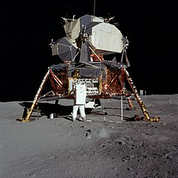

Apollo 11
Apollo 11 was a spaceflight conducted by the United states
From July 16 to July 24, 1969. It marked the first time in history that humans landed on the Moon.
Commander Neil Armstrong and Lunar Module Pilot Buzz Aldrin landed the Apollo Lunar Module Eagle
on July 20, 1969, at 20:17 UTC.Armstrong became the first person to step onto the Moon's surface six hours and 39 minutes later,
on July 21 at 02:56 UTC. Aldrin joined him 19 minutes later
Armstrong and Aldrin collected 47.5 pounds (21.5 kg) of lunar material to bring back to Earth
